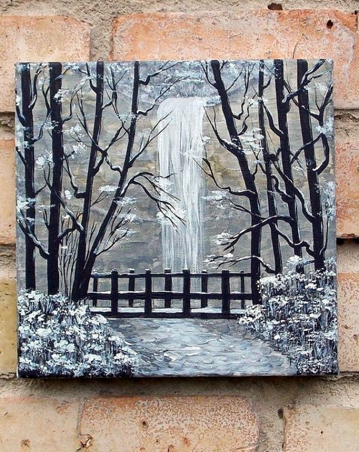

Como surgiu a Pintura?
A Origem da Arte Pictórica. A arte pictórica teve seus primórdios durante o período pré-histórico,
quando grupos nômades utilizavam representações visuais em paredes de rochas. Esses indivíduos
criavam desenhos utilizando carvão, deixando marcas nas cavernas por onde transitavam.
Uma recente revelação ocorrida na Espanha revelou que as pinturas mais antigas já descobertas,
produzidas por seres humanos, remontam a mais de 42.000 anos atrás.
_ a Serra da Capivara.jpeg)
Quem fez a primeira pintura?
Acredita-se que a pintura tenha sido uma das primeiras formas de expressão artística realizada
pelos primeiros seres humanos, possivelmente pelo Homo Neanderthalis, durante a pré-história.
Escavações arqueológicas em diferentes regiões da Europa, África e Ásia revelam que os nossos
ancestrais primitivos foram os pioneiros nas artes da pintura e escultura, utilizando essas
formas de expressão para retratar sua vida cotidiana.
Arqueólogos e antropólogos têm dedicado esforços para estudar e datar essas descobertas.
As peças recuperadas dessas escavações são consideradas documentos históricos valiosos,
verdadeiras testemunhas dos primórdios da vida humana em tempos remotos e das culturas
que já não existem mais.
_ Seridó (RN) e Ingá (PB).jpeg)
A primeira forma de arte conhecida como Pintura Rupestre tenha sido
realizada em abrigos e cavernas utilizadas por povos nômades como refúgio.
As pinturas iniciais foram feitas nas paredes e tetos das cavernas.
Essas primeiras representações, descobertas por arqueólogos, são caracterizadas por
núcleos vibrantes, com a utilização de mais de três tonalidades.
Elas buscavam reproduzir a natureza com o máximo de fidelidade, baseando-se em observações
feitas durante as caçadas. Na caverna de Altamira, na Espanha, encontra-se uma notável
pintura rupestre de um bisonte (ancestral da vaca), que impressiona pelo seu tamanho,
volume e pelo uso da técnica de claro-escuro.
➪ No vídeo acima é apresentado um pouco mais sobre um dos sítios pré-históricos mais importantes do
mundo.A caverna de Chauvet, na região de Ardèche, no sul da França, contém alguns dos desenhos
rupestres mais antigos e notáveis já encontrados - mas foi lacrada desde sua descoberta para
preservar esta arte preciosa.
Agora, uma vasta réplica da caverna e suas pinturas espetaculares
foram construídas. Nossa correspondente científica, Rebecca Morelle, pode comparar as duas versões,
porque ela teve acesso extremamente raro à caverna original.
A Origem da Pintura
Segundo os historiadores, acreditam-se que a origem da pintura tal como a conhecemos hoje
remonta ao período neolítico, por volta do X milênio aC, quando a pintura rupestre começou
a declinar devido ao desenvolvimento da agricultura e da sociedade. Foi na Grécia Antiga
que a pintura surgiu e posteriormente foi aperfeiçoada pelos romanos.
Por volta de 3.000 aC, sobreviveram a surgir pequenas comunidades na Grécia continental,
onde tiveram início uma tradição de pintura em vasos de cerâmica, como vasos e potes.
A partir do segundo milênio aC, na cidade de Creta, desenvolveu-se uma sociedade monárquica
com uma urbanização sofisticada, incluindo palácios, e lá foram encontrados os primeiros
vestígios de pinturas murais, embora poucos deles tenham sobrevivido ao longo do tempo.
➪ Episódio 01: Arqueologia - Revelando nosso Passado
Neste episódio, exploramos o fascinante campo da arqueologia e sua espiritualidade na compreensão
do nosso passado. Recebemos André Strauss e Rodrigo Elias Oliveira, renomados especialistas no
assunto.
Nossos convidados armazenaram informações valiosas sobre como os estudos em esqueletos de milhares
de anos podem revelar detalhes sobre saúde, comportamento e modos de vida de povos antigos. Eles
destacam a importância da análise arqueogenética, um campo emergente, e nos contam sobre a
construção do primeiro laboratório brasileiro de arqueogenética, localizado no campus da USP e
apoiado pela Fapesp.
Descubra as descobertas incríveis que podem ser feitas por meio dessas pesquisas e saiba mais
sobre as expectativas e avanços que serão alcançados com esse novo laboratório. A arqueologia
revela segredos do passado e nos ajuda a traçar um panorama mais completo da história da
humanidade.
Qual a importância das pinturas?
A importância da pintura reside no fato de que ela remonta tão longe quanto a história da humanidade.
Historiadores, filósofos e antropólogos têm se esforçado para desvendar respostas sobre nossa
própria existência, e a pintura é uma das formas que eles utilizam para tentar explicar o
desenvolvimento das civilizações e das culturas que já se extinguiram.
Desde as pinturas rupestres criadas por povos primitivos, o ser humano tem buscado expressar
suas crenças, atividades e cotidiano, assim como a forma como ele percebe o mundo ao seu redor.
É por isso que a história da arte é comumente dividida em períodos que acompanham o próprio
progresso das civilizações.
O renascimento da pintura
No século XIX, com a chegada da Revolução Industrial, a pintura de cavalete começou a perder
espaço devido ao início da fotografia. No entanto, graças às Galerias de Arte, a pintura encontrou
um novo impulso e voltou a ganhar sagrado, atingindo seu ápice. Os pintores passaram a ser
reconhecidos em diversas partes do mundo graças às exposições.
Com o avanço da Arte Moderna e das novas tecnologias, os pintores adaptaram suas técnicas,
criando novas formas de representação e expressão visual. Muitos artistas exploraram a pintura
em conjunto com outras formas de arte, como a fotografia, gerada na criação de colagens e gravuras.
Essa fusão de diferentes meios deu origem a movimentos artísticos inovadores, como o Dadaísmo e a
Pop Arte, proporcionando novas formas de representação e expressão visual na pintura.
➪ Episódio 02: Arqueologia - Olhares de um Antropólogo
A pintura hoje em dia
Através dos milênios, a pintura transcendeu fronteiras territoriais e técnicas, reinventando-se ao longo do tempo. Desde as primeiras pinturas rupestres até a era da Pop Arte, a pintura se estabeleceu como uma forma de expressão vital para a humanidade. Sua importância vai além, influenciando não apenas nossa cultura, mas também a política e a economia. A pintura tem acompanhado o ser humano ao longo de toda a sua história, representando um testemunho duradouro do poder da criatividade e da capacidade humana de se comunicar através das imagens.
